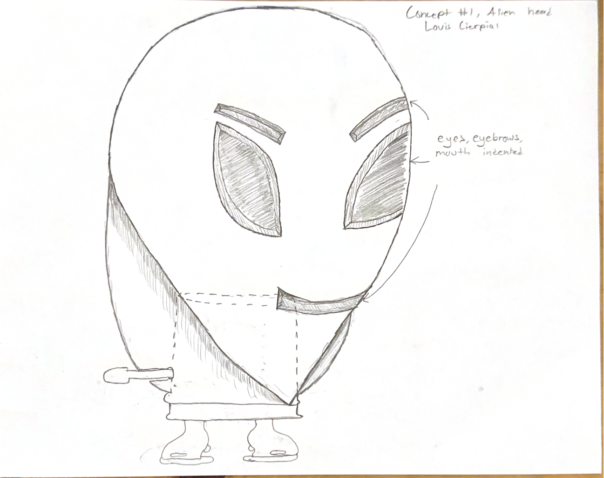
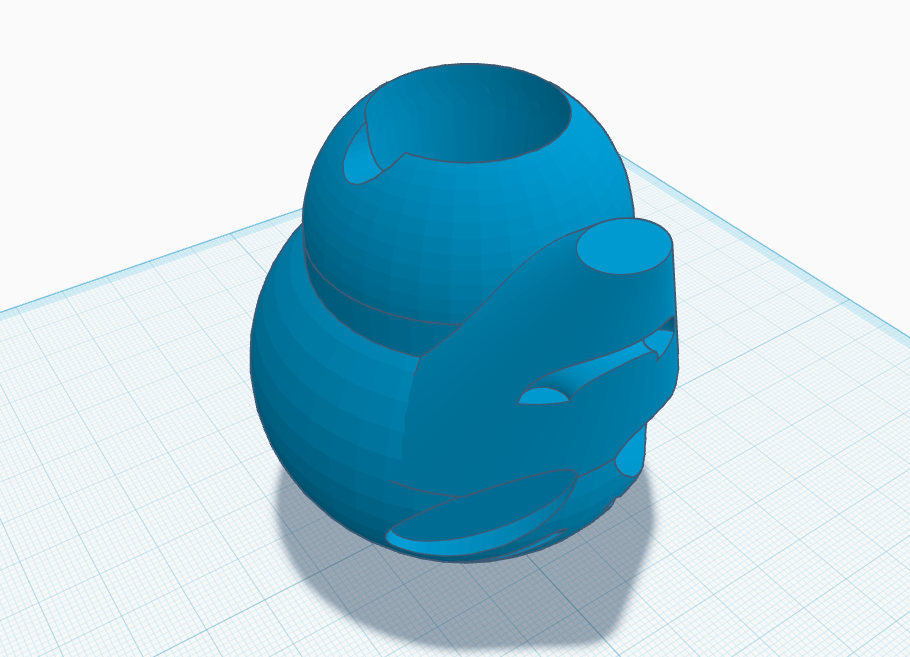
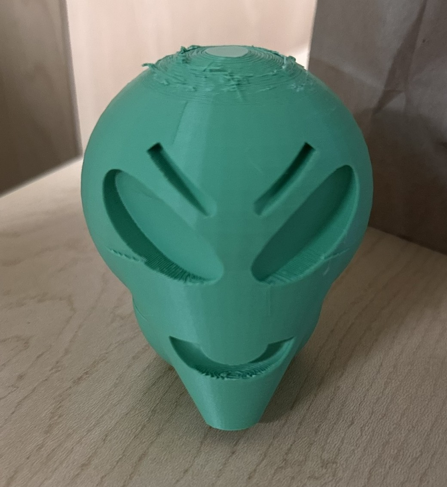

3D-Printed Wind-Up Toy topper
This 3D printing exercise was done as part of my coursework for MI 420 Interactive Prototyping. Low-fidelity sketches were first used to draft possible designs for the toy topper. Out of the sketches, one was chosen, modeled in Tinkercad, and printed at the MSU Libraries Hollander Makerspace.


